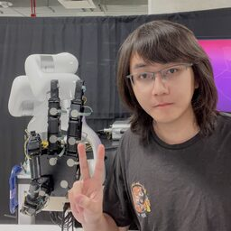

VTAP Gripper: Synergizing Fingertip Sensing and a Visuo-Tactile Active Palm for Dexterous In-Hand Manipulation
Yuhao Zhou,
Sheeraz Athar*,
Zhixian Hu*,
Binghao Huang,
Yunzhu Li,
Juan Wachs,
Yu She
[Webpage]
[Paper]
IEEE/RSJ International Conference on Intelligent Robots and Systems (IROS), 2026

Intro
I'm a third-year Ph.D. student in CS at Columbia University, advised by Prof. Yunzhu Li. I received my M.S. in Mechanical and Aerospace Engineering from UC San Diego, advised by Prof. Xiaolong Wang. I've also had great experiences working at NVIDIA Seattle Robotics Lab and Amazon Frontier AI & Robotics. My research interests lie in Robot Learning, Dexterous Manipulation, Tactile Sensing, Multi-Modal Perception.
News
Learning with Flexible Tactile Skin[2025/10] Invited Talk, UPenn GRASP
• [2026/06] Two papers Tactile Loco-Manipulation and VTAP Gripper are accepted by IROS 2026.
• [2026/06] Released Awesome FlexiTac, the growing ecosystem of research building on FlexiTac, together with the prior works.
• [2026/05] Awarded the Qualcomm Innovation Fellowship 2026. [Link]
• [2026/05] Started my internship at Amazon, Frontier AI & Robotics.
• [2026/03] Released FlexiTac, an open-source, scalable tactile solution for robotic systems. [Hardware Code] [Simulation]
• [2025/11] Invited Talk at New York University, General-purpose Robotics and AI Lab .
• [2025/11] Invited Talk at Amazon, Frontier AI & Robotics.
• [2025/10] Our paper VT-Refine receives the Best Paper Award at IROS 2025 AHFHR Workshop. [Link]
• [2025/10] Invited Talk at Duke Robotics.
• [2025/10] Invited Talk at UPenn GRASP SFI Seminar Series.
• [2025/08] Keynote Speaker at UW AI & Robotics Data Summit.
• [2025/08] One paper is accepted by CoRL 2025.
• [2025/07] Released our new work Touch in the Wild and Code.
• [2025/07] Invited Talk at Facebook AI Research (FAIR). [Slides]
• [2025/06] Touch in the Wild is awarded the Best Demo Award at RSS 2025 Workshop on Robot Hardware-Aware Intelligence. [Link]
• [2025/06] Invited Talk at University of Washington, Mechanical Engineering Department. [Slides]
Publications (show selected / show by date)
* Equal contribution, +/† Equal advising
FlexiTac: An Open-Source, Scalable Tactile Solution for Robotic Systems
Binghao Huang,
Yunzhu Li
arXiv preprint, 2026
[Webpage]
[Paper]
[Video]
[Hardware Code]
[Hardware Tutorial]
[Tactile Simulation in IsaacSim]
The FlexiTac platform has seen broad adoption across academia and industry, including a collaboration with Analog Devices, and is part of a growing flexible-tactile-array research ecosystem:
[ADI]
[Awesome List]
VT-Refine: Learning Bimanual Assembly with
Visuo-Tactile Feedback via Simulation Fine-Tuning
Binghao Huang,
Jie Xu,
Iretiayo Akinola,
Wei Yang,
Balakumar Sundaralingam,
Rowland O'Flaherty,
Dieter Fox,
Xiaolong Wang,
Arsalan Mousavian,
Yu-Wei Chao†,
Yunzhu Li†
Conference on Robot Learning (CoRL), 2025
Best Paper Award at IROS 2025 AHFHR Workshop [Link]
[Webpage]
[Paper]
[Video]
[Code]
Touch in the Wild:
Learning Fine-Grained Manipulation with a Portable Visuo-Tactile Gripper
Xinyue Zhu*,
Binghao Huang*,
Yunzhu Li
Conference on Neural Information Processing Systems (NeurIPS), 2025
Best Demo Award at RSS 2025 Workshop on Robot Hardware-Aware Intelligence [Link]
[Webpage]
[Paper]
[Video]
[Code]
Multi-Modal Manipulation via Multi-Modal Policy Consensus
Haonan Chen,
Jiaming Xu*,
Hongyu Chen*,
Kaiwen Hong,
Binghao Huang,
Chaoqi Liu,
Jiayuan Mao,
Yunzhu Li,
Yilun Du+, and
Katherine Driggs-Campbell+
International Conference on Robotics and Automation (ICRA), 2026
[Webpage]
[Paper]
[Video]
[Code]
[Dataset]
[Audio]
[Blog]
[Deepwiki]
Featured in Video Friday on
[IEEE Spectrum]

3D-ViTac: Learning Fine-Grained Manipulation with Visuo-Tactile Sensing
Binghao Huang,
Yixuan Wang,
Xinyi Yang,
Yiyue Luo,
Yunzhu Li
Conference on Robot Learning (CoRL), 2024
[Webpage]
[Paper]
[Hardware Tutorial]
[Video]
Dynamic Handover: Throw and Catch with Bimanual Hands
Binghao Huang*,
Yuanpei Chen*,
Tianyu Wang,
Yuzhe Qin,
Yaodong Yang,
Nikolay Atanasov,
Xiaolong Wang.
Conference on Robot Learning (CoRL), 2023
[Webpage]
[Paper]
[Code]
Robot Synesthesia: In-Hand Manipulation with Visuotactile Sensing
Ying Yuan*,
Haichuan Che*,
Yuzhe Qin*,
Binghao Huang,
Zhao-Heng Yin,
Kang-Won Lee, Yi Wu, Soo-Chul Lim,
Xiaolong Wang
International Conference on Robotics and Automation (ICRA), 2024
[Webpage]
[Paper]
[Code]
Rotating without Seeing: Towards In-hand Dexterity through Touch
Zhao-Heng Yin*,
Binghao Huang*,
Yuzhe Qin,
Qifeng Chen,
Xiaolong Wang.
Robotics: Science and Systems (RSS), 2023
[Webpage]
[Paper]
[Code]

AnyTeleop: A General Vision-Based Dexterous Robot Arm-Hand Teleoperation System
Yuzhe Qin,
Wei Yang,
Binghao Huang,
Karl Van Wyk,
Hao Su,
Xiaolong Wang,
Yu-Wei Chao,
Dieter Fox
Robotics: Science and Systems (RSS), 2023
[Webpage]
[Paper]
[Retargeting Code]
[Visualization Code]
DexPoint: Generalizable Point Cloud Reinforcement Learning for Sim-to-Real Dexterous
Manipulation
Yuzhe Qin*,
Binghao Huang*,
Zhao-Heng Yin,
Hao Su,
Xiaolong Wang.
Conference on Robot Learning (CoRL), 2022
[Webpage]
[Paper]
[Code]
Robot Systems
FlexiTac Tactile Platform
FlexiTac is an open-source, scalable tactile sensing solution designed to make touch sensing easier to build, customize, and deploy across robotic systems. Based on the FlexiTac platform, we support fast hardware fabrication, tactile simulation for robot learning workflows, and system integration from manipulation hardware to real-world learning pipelines. [Webpage] [Hardware Repo] [Hardware Tutorial] [Simulation]Open-Source Hardware
Tactile Simulation
System Designs
Tactile Bimanual Manipulation System
We propose 3D-ViTac, a multi-modal sensing and learning system for dexterous bimanual manipulation. This system features flexible, scalable, low-cost tactile sensors, each finger equipped with a 16 × 16 sensor array. [Hardware Tutorial] [Webpage] [Paper]
Tactile Dexterous Hand System
We propose Touch Dexterity, a new dexterous manipulation system that performs in-hand object rotation using only touch sensing. The hardware setup uses 16 FSR sensors attached to an Allegro hand.Hardware Setup
In-hand Object Rotation
Contact Signal Simulation
Bimanual Hand Robot System
We propose Dynamic Handover, a new bimanual dexterous-hand system for throwing and catching tasks. It consists of two Allegro hands mounted on XArm robots in a face-to-face configuration.
Hardware Setup
Throw and Catch in Real
System in Simulation
Mobile Robot Navigation & Perception
We developed a ROS-based control pipeline for a mobile-robot navigation system that uses 2D LiDAR and depth cameras, together with a vision-based tracking method built on object detection for obstacle avoidance.
[Paper]
[Code]

Hardware Setup
Navigation in Simulation
Navigation in Real World
Work Experience
Applied Scientist Intern, Amazon Frontier AI & Robotics
05/2026 - Present

Robotics Research Intern, NVIDIA
05/2025 - 08/2025
Mentor:
Yu-Wei Chao,
Jie
Xu,
Iretiayo Akinola,
Wei Yang,
and
Yashraj Narang
Robotics Research Intern, NVIDIA
05/2024 - 12/2024
Mentor:
Yu-Wei Chao,
Jie
Xu,
Iretiayo Akinola,
Wei Yang,
Xiaolong
Wang,
Arsalan
Mousavian, and
Dieter Fox.
Professional Service
• Conference Reviewer — Robotics: CoRL, RSS, ICRA, IROS; ML: NeurIPS, ICLR• Journal Reviewer: IEEE T-RO, IEEE RA-L, IEEE Signal Processing Letters
• Workshop Organizer: Learning Dexterous Manipulation @RSS 2023, 2nd Workshop on Dexterous Manipulation @CoRL 2025
• Invited Talks: UPenn GRASP SFI, Duke Robotics, UW AI & Robotics Data Summit (Keynote), Facebook AI Research (FAIR), NYU GRAIL, Amazon Frontier AI & Robotics [Show more]
Interests
In addition to my research in Robotics, I am also a content creator with a strong passion for sharing my
knowledge of the field. I currently manage a Robotics Video Channel with over 63,000 followers and 4
million views in total. My Most Popular Video, which discusses robots combined
with brain-computer interfaces, has garnered over 1.84 million views and is widely recognized within the field.